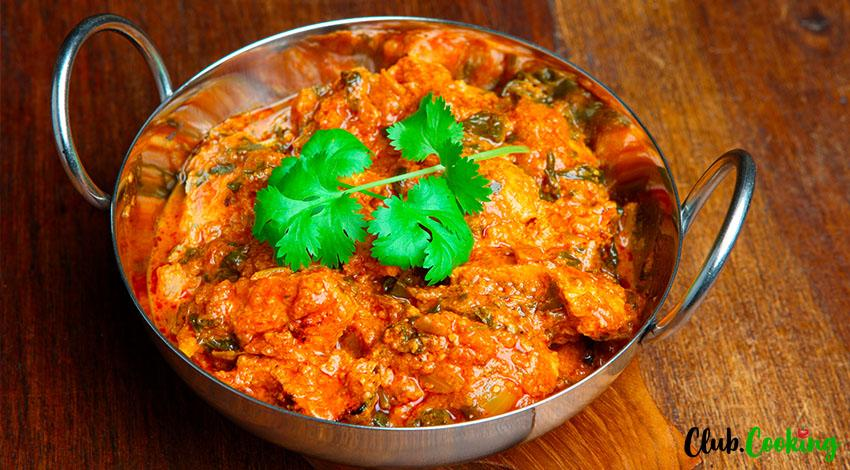

Chicken Saag

Description
This flavorful Indian curry recipe, chicken saag, is easy made in the comfort of your own house.
It is bursting with bold and delicious flavors and is pretty close to a real restaurant style curry.
Chicken thigh meat is stewed together with aromatic Indian spices, tomato paste, ginger paste,
homemade onion paste and frozen spinach. The sauce is dynamite. It is thick, dark and rich, with
complex and intense Indian flavors.
Making Indian dish at home from scratch might seem like a bold and ambitious resolution. But it is
actually pretty easy, especially if you try different dishes and have all the spices on hand. The
spice combination is pretty standard for many dishes, you just really change the other ingredients.
This recipe is simplified and modified. We are creating onion paste after microwaving the onions for
10 minutes. And the taste is very, very close, trust me.
To make chicken saag only takes 40 minutes, but the result is mouthwatering, fragrant curry that is
to die for. This recipe is absolutely foolproof. Make sure to carefully follow all the detailed steps
to create this wonderful Indian cuisine masterpiece.
Ingredients
- 2½ pounds boneless, skinless chicken thighs, cubed
- 2 tablespoons olive oil, divided, or more as needed
- 2 teaspoons ground cumin, divided
- 2 teaspoons ground coriander, divided
- 2 teaspoons garam masala, divided
- salt and ground black pepper to taste
- 1 (8 ounce) package fresh spinach
- ¼ tablespoon butter
- 1 medium onion, diced
- 5 cloves garlic, minced
- 3 fresh red chile pepper, minced
- 2 tablespoons minced fresh ginger root
- 5 fresh curry leaves
- 5 cardamom pods
- 1 teaspoon mustard seed
- 1 teaspoon ground turmeric
- ½ (8 ounce) can tomato paste
- 2 (6.5 ounce) cans tomato sauce
- 1 teaspoon honey
- 12 ounces paneer, diced
- ¼ cup heavy cream, or more to taste
Steps
- Drizzle chicken with 1 tablespoon olive oil. Season with 1 teaspoon cumin, 1 teaspoon coriander, 1 teaspoon
garam masala, salt, and pepper.
- Heat a skillet over medium-high heat. Add chicken; cook and stir until nicely browned and cooked through,
about 10 minutes. Remove from the skillet.
- Heat 1 tablespoon oil in a separate pan over medium heat. Add spinach and season with salt; cook, covered,
until spinach is wilted, 2 to 3 minutes. Remove from heat and set aside.
- Melt butter in the same skillet used for chicken over medium-high heat. Saute onion and a pinch of salt in
the hot pan until onion has softened, stirring to pick up browned bits left from the chicken, 5 to 7 minutes.
Add garlic, chile peppers, and ginger; cook for 1 to 2 minutes, adding olive oil if necessary.
-
Add curry leaves, cardamom pods, mustard seed, and turmeric; cook and stir for 30 seconds. Stir in tomato
paste and continue to cook, 1 to 2 minutes. Add tomato sauce, honey, and sauteed spinach; reduce heat to low.
-
Blend sauce mixture in the skillet using an immersion blender until smooth. Continue to let simmer, 10 to 20 minutes.
- Remove from heat. Add chicken and stir in paneer and heavy cream.
Cook's note
If you don't have an immersion blender, you may pour the sauce mixture into an electric blender and pour back into
the pan in batches for the final simmer. If you don't own a blender, consider chopping the sauteed spinach thoroughly
before adding to the sauce mixture to simmer.
go back to home page